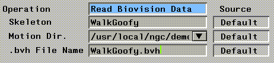
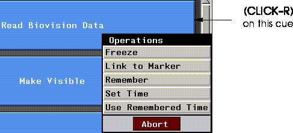

[N-World Contents] [Book Contents] [Prev] [Next] [Index]
Motion Blending
This is a tutorial for setting up a decompose-pose-to-pose blend in N-Dynamics. This tutorial describes how to set up a script that lets you blend between two motions.
In this Chapter
You'll learn two motion capture data files together to create a smooth transition...in this case, from a walk into a jog.
Blending Motions
In this exercise, we will be setting up a script which reads in two separate Biovision motion capture files. After reading in the motion data, we'll decompose that data into poses, then blend the two motions together to create a seamless animation. In this example, we'll be combining a walk cycle and a jog cycle to create one animation which walks into a jog.
If you'd rather, you can load the demo script in which these two motions are blended:
/usr/local/ngc/demo/scripts/blend-motion
You can animate the script to see how the two motions blend smoothly together, then follow the discussion below to see how we did it.
Loading your Objects
1. In N-Geometry, (CLICK-L) on GeoMenus>Open.
- Load the following BioVision skeleton from N-Geometry:
/usr/local/ngc/demo/WalkGoofy.bvh
- The skeletons appear in the N-Geometry window:
Figure 11.1 Skeletons loaded into N-Geometry
- Note! In a motion blend, you apply both motions to the same skeleton. It is important that the two motions you are blending between be from the same vendor and that the motion capture data uses the same bone naming scheme.
2. (CLICK-L) on the Dynamics button at the bottom of the screen.
- This makes both the N-Geometry and the N-Dynamics window visible, and arranges them nicely on your desktop.
Creating your Script
3. (CLICK-L) on the N-Dynamics window, then (CLICK-L) on Create New Script.
- Specify the directory where you want to save the finished script, and give the script a name.
4. When prompted, give the script four channels.
Editing the Script
The first step in creating this blend will use four channels:
Setting up the First Channel
5. (CLICK-M) on the first channel to open it.
6. (CLICK-L) on the Operation field.
7. (CLICK-L) on the Skeletal Animation>Read Biovision Data.
8. (CLICK-L) on the Skeleton field.
- Select WalkGoofy from the list that appears.
9. (CLICK-R) on the Motion Dir. field, then select the directory that contains the motion capture file:
/usr/local/ngc/demo/biovision/
10. (CLICK-R) on .bvh File Name and select the following motion capture data file:
WalkGoofy.bvh
- N-Dynamics asks if you want to change the script length to match motion array. (CLICK-L) on Yes, then Do It. Note that the script length automatically changes to match the length of the saved motion capture file-in this case, 74 frames.

Figure 11.2 The Read BioVision Data channel
Freezing the End Cue
Once the motion capture data has been read in, we have to freeze the end cue of the first channel. This lets us read in a motion array of a different lenght without affecting the length of any existing channel.
11. Place your cursor over the end cue of the first channel.
12. Once the cue is highlighted, (CLICK-R) on the cue, then (CLICK-L) on Freeze.

Figure 11.3 Freezing the end cue
For now, you can leave this channel alone...we'll come back to it later.
Setting up the Second Channel
13. (CLICK-M) on the first channel to open it.
14. (CLICK-L) on the Operation field.
15. (CLICK-L) on the Skeletal Animation>Read Biovision Data.
16. (CLICK-L) on the Skeleton field.
- Select WalkGoofy from the list that appears.
17. (CLICK-R) on the Motion Dir. field, then select the directory that contains the motion capture file:
/usr/local/ngc/demo/biovision/
18. (CLICK-R) on .bvh File Name and select the following motion capture data file:
JogTurnL.bvh
Figure 11.4 The Read BioVision Data channel
- N-Dynamics will ask you if you want to change the script length to match the motion array.
19. (CLICK-L) on Yes.
- Because you've frozen the end cue of the first channel, it will stay where it is. The frame count at the bottom of the script editor should now read 49 and the script should look like this:
Figure 11.5 Note that the first channel extends past the right side of the script
Changing the Script Length
Now it's time to lengthen the overall script to accomodate both motion capture files. To determine the length of the script, add the number of frames in WalkGoofy (74) to the number of frames in JogTurnL (49). These channels should overlap somewhat, too, so we'll also need to add a few extra frames where the blend should occur.
To change the script length:
20. (CLICK-L) on the frame range box at the bottom right corner of the script editor.
Figure 11.6 Changing the script length
21. (CLICK-L) on Change Script Length.
22. (CLICK-M) on Length (frames) and enter 125.
Figure 11.7 Enter a new number of frames
- We got this number by adding 74 frames + 49 frames + two extra frames for blending.
23. (CLICK-L) on Done.
- The script now has 125 frames. The end cue of channel 1 has been frozen at 74. You can look at frame numbers by moving the cursor over the timeline at the bottom of the script window.
Figure 11.8 Move the cursor back and forth over a channel, watching the time line, to see the frame at which a channel ends; in this case, the first channel ends at frame 74
Decomposing the First File into Pose Data
We are now going to decompose the WalkGoofy data to create a Pose-to-Pose channel.
24. (CLICK-R) on the top channel.
25. (CLICK-L) Decompose>Pose to Pose.
Figure 11.9 Decompose the motion into poses
26. Choose 4 frames between poses, then (CLICK-L) on Do It.
- After the data is decomposed, you can (CLICK-L) on the channel to see where the individual poses were created.
Figure 11.10 Curve channel inserted below decomposed motion data
Realigning the Second Channel
We need to allow these two motions to blend into one another towards the end of the WalkGoofy cycle and the beginning of the JogTurnL cycle. To overlap the actions, we need to drag the JogTurnL channel from left to right so that it overlaps the top channel by about 20 frames. We do this before we decompose the channel so it will not change the timing of the cycle. If the channel is already decomposed when you shorten the channel, it will shorten each pose's length.
27. (CLICK-L) on the first cue of the JogTurnL channel.
- Drag it to the right, until it is approximately 20 frames from the end of the WalkGoofy channel (frame 54)
Figure 11.11 Drag the left edge of the second channel so it starts at frame 54
It is now safe to decompose the JogTurnL data without damaging its timing.
28. (CLICK-R) on the JogTurnL channel.
29. (CLICK-L) on Decompose>Pose to Pose.
- Specify 4 frames between poses. If you open the channels after decomposing this action, your script should look something like this:
Figure 11.12 Decomposed channels
Adding an Update Skeleton Operation
It's time to do some house cleaning and set up the last two channels. We are going to use the third channel to make a reference pose visible so we can more easily match our motions, and the fourth channel as the Update Skeleton channel.
30. (CLICK-M) on the fourth channel.
31. (CLICK-L) on the Operation field, then (CLICK-L) on Skeletal Animation>Update Skeleton.
32. (CLICK-L) on the Skeleton field, then specify WalkGoofy as the skeleton to be updated.
- Leave the rest of the parameters at their default values. Your parameters should look like this:
Figure 11.13 Update Skeleton parameters
Selecting Where to Blend
In order to have two decomposed motion capture files blend smoothly, we need to select a pose from the first motion channel, create a reference pose, then find a pose in the second channel that matches it somewhat closely.
There are some parameters to consider when comparing poses:
For example, in this tutorial we'll use the toes on the left foot as a place to match the poses. In this case, we need a pose that is just before the end of WalkGoofy and a pose that is at the beginning of JogTurnL where the left foot of the skeleton is in the same position.
Once those poses are located, we can find the distance between those points and use that as the offset values when blending the motion.
Test Animate
We need to animate and find a good pose. Remember, we are looking to find a pose in which the left foot is planted. (Other animations may lend themselves to looking for similarities in other points such as the root node or hands, especially if you are blending primarily upper body motion); however, looking for the foot plant works well for walk cycles.
33. Place your cursor over the JogTurnL channel and press the "a" hot key to deactivate the channel.
- We don't want any of JogTurnL's translations to effect WalkGoofy quite yet. The text of the channel turns black to tell you its inactive.
34. (CLICK-M) along the timeline at the the different frames where cues were inserted in the first channel.
- You may have to adjust your camera so you can see the skeleton.
- At frame 69 the WalkGoofy skeleton's left foot is planted. This cue fits both of the criteria we described above: it's close to the end of the first channel and has the clear pose (foot plant) we were looking for.
Figure 11.14 Pose with left foot planted
- We'll call this the match frame for discussion below.
Create a Reference Pose
Now that this pose has been selected and is current in the geometry window, we can create a reference pose to help us match the cycles.
35. (CLICK-L) on the Browser button on the configuration bar at the bottom of the N-Geometry window.
- This opens the Browser.
36. (CLICK-L) on Skeleton.
- The Browser should now look like this:
Figure 11.15 Using the Browser to make a reference pose
37. (CLICK-L) on WalkGoofy.
- A red outline appears around the node, indicating it is selected; also, the name appears in the Current: field at the top of the Browser.
Figure 11.16 Selecting the WalkGoofy skeleton
38. (CLICK-L) on the Make Reference button.
- This creates a reference pose object (basically a wire copy) of the skeleton in its current pose.
39. Minimize the Browser.
Setting up the Third Channel
To have this reference visible when we animate the JogTurnLchannel, we need to select it in the Make Visible channel:
40. (CLICK-M) on the third channel.
41. (CLICK-L) on the Object field and choose the reference that was created:
Figure 11.17 Make the reference visible
Aligning the Second Motion with the Match Frame
Next, we need to find a frame in the second animation that matches the reference pose we just created.
42. Deactivate the WalkGoofy channel.
- Put the cursor over it, highlighting the entire channel (curve and parent) and press the "a" hot key
43. Activate the JogTurnL channel.
44. (DRAG-M) over the timeline to find a spot where its left leg is planted (you may have to adjust your camera again to see this):
- For our purposes, the foot plant at frame 63 is close enough.
Figure 11.18 Left foot plant using the JogTurnL motion; reference pose in background
Now, we have to align this pose to the match frame we selected in the top channel by sliding the channel left.
45. (CLICK-R) on the JogTurnL channel and use Slide to drag it to match up the cues.
- Try to match up the pose third pose in the JogTurnL channel so that it lies on frame 69 (the WalkGoofy pose).
Figure 11.19 Aligning the cues
Using Describe to Find Out about the Poses
Now that we have both poses available to us in the geo window we can describe the end point of the foot to see its current global coordinates. Before we can describe the reference pose's location, we need to turn its sensitivity on.
46. (CLICK-L) on GeoMenus>Object Display>Sensitivity.
47. (CLICK-L) on Reference-pose to make it sensitive.
48. Choose points on the element sensitivity menu.
49. (SHIFT-L) on the end point of the left (planted) foot on the Reference-pose skeleton.
50. (CLICK-L) on Describe.
- This will send the current location data to the shell you started the program in It will look like this:
#<BONE-NODE 5 ( 11.97 -35.05 -16.91)>
home: 11.968449, -35.04589, -16.905409
curr: -5.63659, 1.0945396, 53.460068
dir0: -0.10483258, 0.020356886, 0.9942815
dist0: 53.767536
home loc: 11.968449, -35.04589, -16.905409
objs: ("Reference Pose")
- The end point of the left foot (planted foot) on JogTurnL will look like this:
#<BONE-NODE 5 ( 9.69 -35.42 -21.41)>
home: 9.690525, -35.4239, -21.410463
curr: 0.8046317, -3.554329, 122.16853
dir0: 0.006583316, -0.029080719, 0.99955547
dist0: 122.22287
home loc: 9.690525, -35.4239, -21.410463
objs: ("WalkGoofy") {JogTurnL uses the same skeleton as WalkGoofy}
- Again, we are describing these points so that we can find the distance between the skeleton at the end of WalkGoofy and the skeleton at the beginning of JogTurnL. We have matched the cues up on the timeline now we have to match the skeletons on the 3D plane.
- In order to get the distances between the skeletons' left feet to use the offsets in the blending function, we have to do some math.
- If we subtract the curr: x & z values of the JogTurnL pose from those of the WalkGoofy pose, we'll be able to move the JogTurnL skeleton so it's in the same place at the same time as the WalkGoofy skeleton.
Keep those values handy...after we make changes to the WalkGoofy and JogTurnL channels we'll plug them in and animate.
Changing the Blend Mode
51. (CLICK-M) on the Decomposed WalkGoofy channel (1st channel)
- Change the Mode to Blend, then (CLICK-L) on Do It.
Figure 11.20 Change the Blend Type to Blend
- Note. The Spin Angle setting at the bottom of this window lets you adjust the direction in which the skeleton travels. You only need to use this parameter when motion was capture along two different axes.
52. (CLICK-M) on the JogTurnL channel.
- Change the mode to Blend.
53. (CLICK-L) on the box next to Blend Value.
- Change the value from Default to Dynamic.
- This allows us to control the amount that JogTurnL poses effect the translations of the skeleton as it makes a smooth transition from WalkGoofy to JogTurnL.
54. Under Root Alignment change the Offset values from:
0.0 0.0 0.0
- to
6.44 0.0 -68.71
Figure 11.21 Changing the translation offset
- By not offsetting the y value, we allow the system to interpolate root location and create a smoother blend.
55. (CLICK-L) on Do It.
Adjust the Blend Curve
We need to adjust the blend curve to create a smooth transition.
56. (CLICK-L) on the [BLEND-VALUE] curve channel under the the JogTurnL channel.
57. Move your cursor over the channel until the now-time marker matches up with the end of the top channel.
- We are going to make a cue in the curve here so make sure your cursor rests above the curve for the Blend Value.
58. Press the "s" hot key to insert a cue.
Now we need to adjust the start value of the curve so that the first part of the curve has no effect on the above motion and the end part is completely controlling the skeletal motion.
59. (CLICK-M) on the blend curve channel.
- Change the start value from 1.0 to 0.0
Figure 11.22 Setting the start value for the curve channel
60. (CLICK-L) on Do It.
- If you (CLICK-L) over the blend curve, you will see a graphical representation of the curve and visualize how the JogTurnL eventually takes over.
Figure 11.23 The second motion is blended in based on the shape of the ramp between the start of the second channel and the cue.
- You can experiment with different curve types for different results, as explained in the N-Dynamics Reference Guide.
Animate!
61. Make sure both decomposed motion channels are activated, then (CLICK-L) on Animate in the N-Dynamics window.
- Make sure that all the channels are active. After you've seen the animation with the reference pose visible, you can deactivate that channel and re-animate. Also, there are some adjustments that can be made to perfect the animation.
62. (CLICK-L) on the Playback button and see how smoothly the transition goes.
Figure 11.24 The motion blends smoothly
Delete the Make Visible Channel
After you have successfully blended the two motions, you will no longer need the Make Visible reference-pose channel.
63. Move the cursor over the Make Visible reference-pose channel and press the "Shift-D" hot key.
Save Your Work
Make sure to save your script, which contains your modified motion capture data. If you are working with Acclaim skeletons, you can also try adding a Write Acclaim Data channel to the script to write out a new single motion capture file from the two blended motions.
Troubleshooting
Skeleton Spins
If you experience the skeleton doing spins when it shouldn't be, you can change the blend mode from XYZ to Q-ROOT ONLY. This might correct the gimbal lock, which is a sometime result of the way some motion is captured.
Hesitation or Skip at the Blend
It's likely that your translation is slightly off. Try modifying the Offset value (the Z value in this case) in the second motion, or slide the second channel slightly to make it line up better.
Congratulations!
You've successfully blended two motions, going from a walk to a jog. This technique can be extended to blending other motion capture data files.
[N-World Contents] [Book Contents] [Prev] [Next] [Index]
 Another fine product from Nichimen documentation!
Another fine product from Nichimen documentation!
Copyright © 1996, Nichimen Graphics Corporation. All rights
reserved.